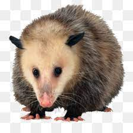
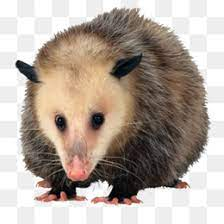
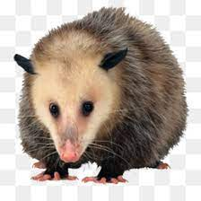

A fauna dos Parques Belorizontino são compostas por: tucanos, pica-paus, sabiás, gaviões, sanhaços, garrinchas, corujas, saracuras, gambás e micos-estrela, que podem ser vistos em passeios pelas trilhas.
Durante o passeio é possivel contemplar e prestigiar alem do ar puro as especies que por lá habitam.
Galeria da fauna:

Saiba mais sobre a fauna dos parques Belorizontino https://prefeitura.pbh.gov.br/fundacao-de-parques-e-zoobotanica
 🔸 Developer 🔸 Nilva Pires🔸 2023
🔸 Developer 🔸 Nilva Pires🔸 2023